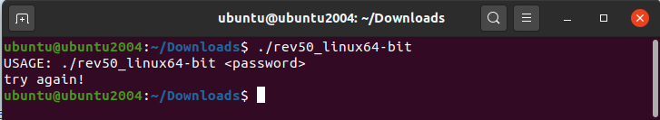
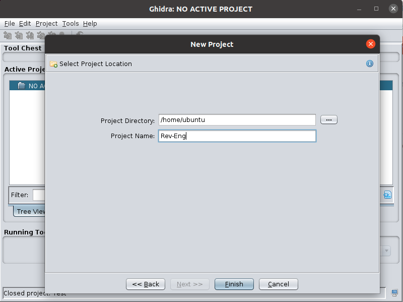
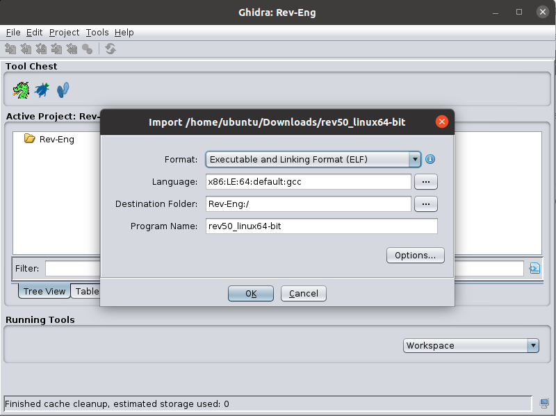
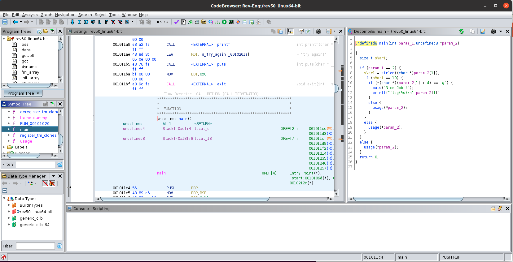
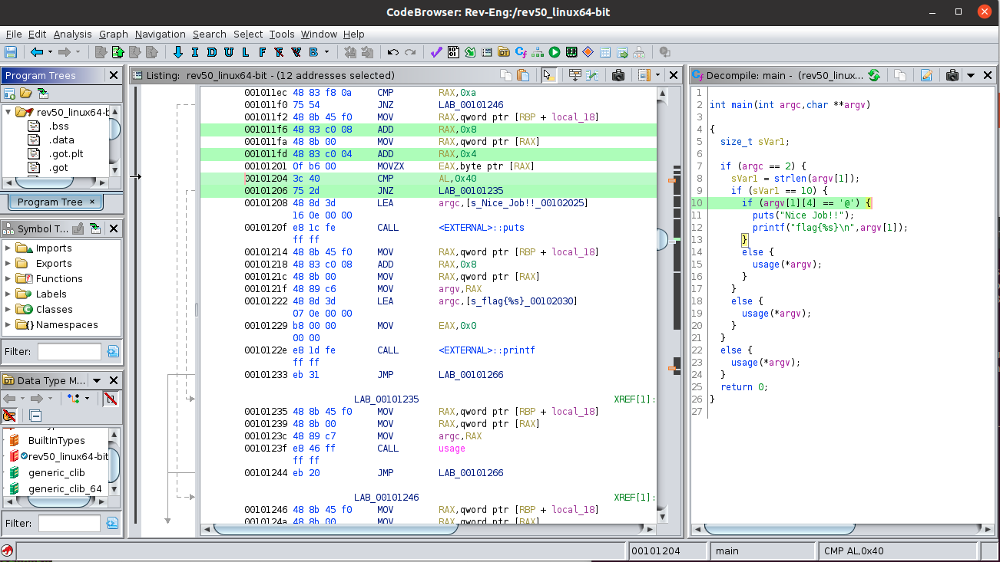
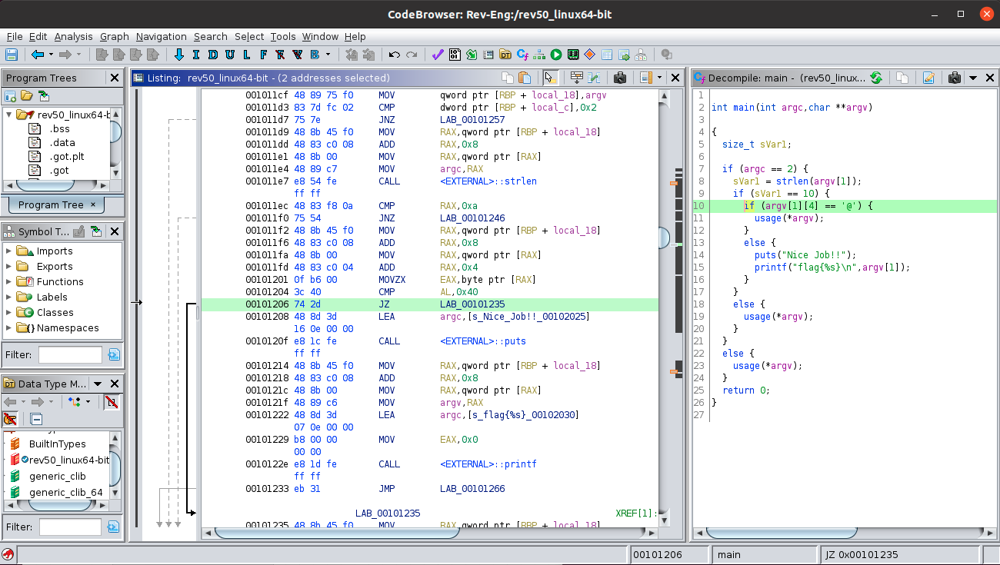
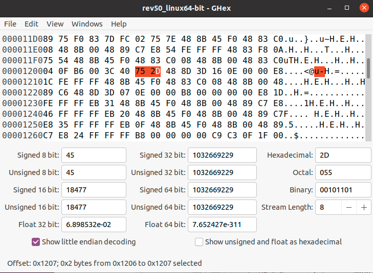

Laboratory 1. IP Camera Pentest
Introduction
The objective of this laboratory session is to put into practice the knowledge on how to carry out a penetration test (pentest) on a specific device, such as an IP camera.
Task 0
To carry out the laboratory we will need the following software elements:
-
IOTNA Ubuntu Virtual Machine (Download & Instructions)
-
IP Camera firmware:
- SPI extracted version (spi_firmware.bin)
- Micro SD extracted version (usd_firmware.zip)
-
Ghex:
sudo apt-get install ghex
Binwalk
Binwalk is a fast, easy to use tool for analyzing, reverse engineering, and extracting firmware images.
Minimal installation instructions inside Ubuntu VM:
git clone https://github.com/ReFirmLabs/binwalk.git
cd binwalk
sudo python3 setup.py install
Dependencies:
# Install sasquatch to extract non-standard SquashFS images
sudo apt-get install zlib1g-dev liblzma-dev liblzo2-dev
git clone https://github.com/devttys0/sasquatch
(cd sasquatch && ./build.sh)
# Install jefferson to extract JFFS2 file systems
sudo apt-get install pip
sudo pip install cstruct
git clone https://github.com/sviehb/jefferson
(cd jefferson && sudo python3 setup.py install)
# Entropy study
sudo pip install matplotlib
Ghidra
Ghidra: A Software Reverse Engineering (SRE) suite of tools developed by NSA's Research Directorate in support of the Cybersecurity mission.
Dependencies:
sudo apt-get install default-jre default-jdk
Download Hidra 10.1.2, unzip and execute (./ghidraRun).
Familiarise with Ghidra: easy_reverse
Task 1.1
Once we have Ghidra installed in the Virtual Machine, we will follow the tutorial example to reverse engineer a linux executable file to obtain a secret password:
-
Get the executable file from easy_reverse (zip password:
crackmes.one) or use directly the binary inside file rev50.zip -
Execute the binary:

-
Create a new Ghidra project by executing
./ghidraRunin the command line inside hidra folder(File -> New Project -> Non-Shared Project:
-
Add the binary file (
File -> Import File): -
Double click in the binary file to start the code browser and select analyze the file now using the default parameters.
-
Locate the
mainfunction
-
For a better understanding of the code, modify the prototype of the
mainfunction, by right-clicking on it and selectingEdit Function Signature, to use the standard definition:int main(int argc, char **argv) -
Analyse the code and extract the password
-
Try again
./rev50_linux64-bitto see if you know a valid password.
Task 2.1: Patch easy_reverse
Modify the binary file to accept any password of length 10 without an @ at the fifth position:
-
Locate the line in which the content of the password is checked:

-
Right click on the interaction that rejects the password located in
0x0010-1206(JNZ LAB_00101235) toPatch Instructionand change it toJZ LAB_00101235. And analyse the code again (Analysis->Auto Analyse...):
The bytecode of the instruction located in 0x0010-1206 has changed from 0x752d to 0x742d and also the decompiled code has changed. Now the program rejects passwords that do NOT contain an @ ant the fifth position.
The patching functionality of Ghidra does not work correctly, so we will patch it using a binary editor as Ghex:
-
Install Ghex:
sudo apt-get install ghex -
Open the binary file and locate the line (
0x1206) that contains the instruction0x752D:
-
Change it for
0x742d, save asrev50_linux64-bit_hackedand test it:
buntu@ubuntu2004:~/Downloads$ ./rev50_linux64-bit_hacked 1234567890
Nice Job!!
flag{1234567890}
Is it possible to completely remove the password verification? Explain how and patch the binary to do it.
Task 2.1
Once we have Binwalk installed in the Virtual Machine:
-
Download the firmware
ip_cam_attify.binand usebinwalkto extract its content. -
Locate the
npc.tar.gzand extract its content
Task 2.1
Analyze the npc binary file with Ghidra:
-
Execute
ghidra_10.1.2_PUBLIC/ghidraRun -
Create a project, import the
npcfile and analyse it. -
The camera rejects modified Firmwares with the message:
Md5 err!. Find the string and locate the functions in which it is used. -
Which line should we modify to accept any firmware?
Report: Create a report (one per class group) with screenshots and comments, send it to recas@ucm.es. Due Date: May 17.